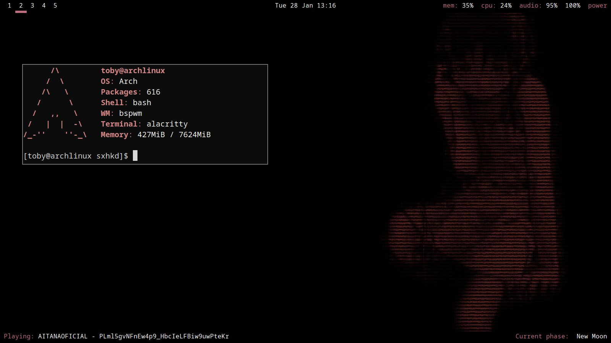
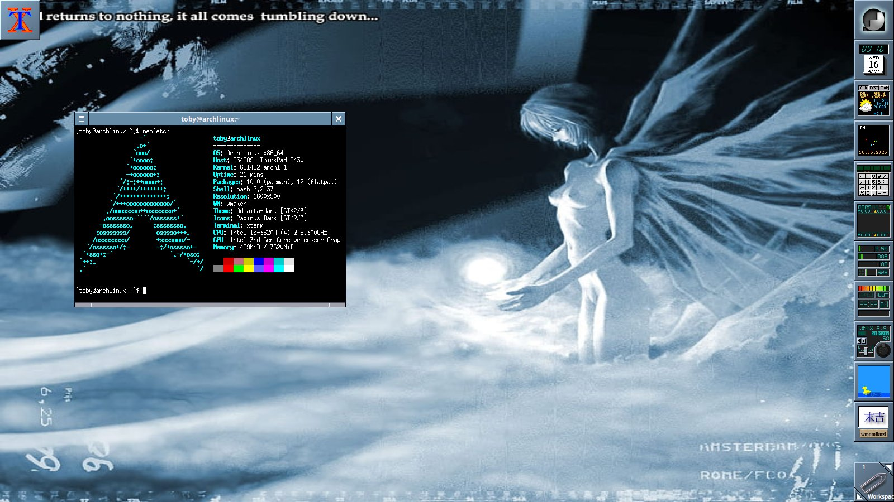
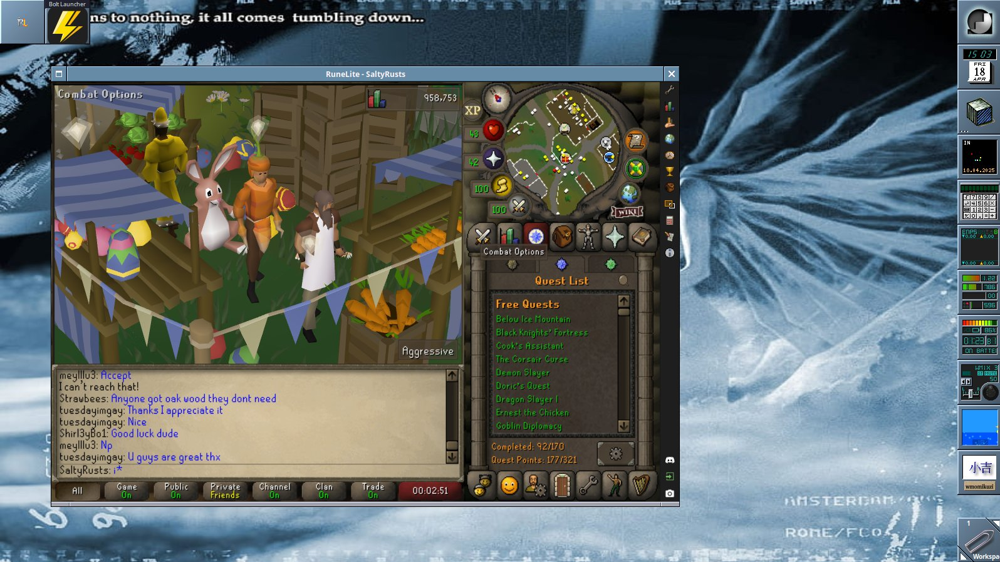

I love simple to use clean looking interfaces but i also like classic 2000's looking interfaces, i mainly use bspwm and windowmaker, but on my maindesktop i use kde because i game on it
These rices are on my github if you want to use them, if they are not feel free to message me and i'll send you the files
Here is my BSPWM rice

This was my first rice and super simple and useful, it runs bspwm which is a window manager where you code all your config at the start so you know what everything is doing, the two taskbars are polybar with custom scripts including a moonphase script because i love the moon.
Here is my windowmaker rice


I wanted to go for a 2000's blue theme and i like evangelion so thats my background on the right you see all my widgets which i love because they show me actual data like CPU usage and battery. I mainly use this on my laptop.